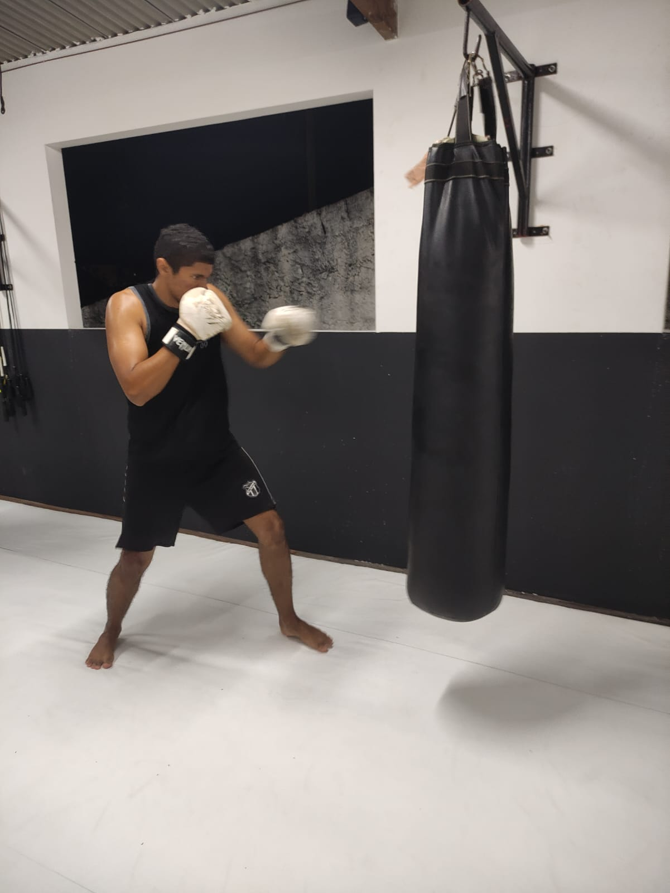

Melhora a Condição Física:
Aumenta a resistência cardiovascular e tonifica os músculos.

Explore o universo do Boxe na UBT, onde cada soco é uma expressão de disciplina e determinação. Nossos instrutores dedicados o acompanharão em uma jornada de autodescoberta, física e mental. Desafie-se e aprimore suas habilidades conosco.
O Boxe na UBT não é apenas sobre força física; é uma prática que integra corpo e mente. Aqui, você aprenderá técnicas fundamentais e avançadas, enquanto desenvolve autoconfiança, resiliência e foco. Nossa abordagem equilibrada garante que todos, desde iniciantes até lutadores avançados, encontrem seu caminho para o crescimento pessoal e esportivo.
Venha treinar em um ambiente acolhedor e inspirador, onde valorizamos o espírito esportivo e a camaradagem. Na UBT, acreditamos que o Boxe pode transformar vidas, proporcionando uma jornada de saúde, bem-estar e superação contínua.
Aumenta a resistência cardiovascular e tonifica os músculos.
Ensina a importância da prática regular e do foco.
Melhora a agilidade, o reflexo e a precisão.

Proporciona uma excelente forma de aliviar o estresse e a tensão.
Junior Romarinho é um dedicado e experiente treinador de boxe no CTUBT. Com anos de experiência no ringue, ele possui um profundo conhecimento das técnicas e estratégias do boxe. Sua trajetória é marcada pela paixão pelo esporte e pelo comprometimento em transmitir essa paixão para seus alunos.
Sob a orientação de Junior Romarinho, os alunos não apenas desenvolvem suas habilidades técnicas, mas também adquirem disciplina e confiança que são valiosas dentro e fora do ringue. Ele acredita que o boxe é uma ferramenta poderosa para transformação pessoal, ajudando seus alunos a alcançarem seus objetivos com dedicação e empenho.
Descubra o que nossos alunos têm a dizer sobre suas experiências na UBT. Seus depoimentos refletem não apenas a qualidade do nosso treinamento, mas também o impacto positivo que a UBT tem em suas vidas. Leia abaixo o que eles têm a dizer:
"Treinar no CTUBT é como estar em casa! Existe uma frase que diz: "Nosso lar é onde o nosso coração está", e é exatamente isso que sinto. Passei por outras academias de jiu-jitsu, mas nenhuma me tocou como o CTUBT. Lá encontrei minha segunda família."
"A identidade do CTUBT é formada pelos mestres, alunos e suas relações. A amizade, carinho e respeito tornam a experiência única. Desde que comecei a treinar em 2019, como faixa branca, minha confiança e gratidão pelos mestres e amigos só aumentaram. Os ensinamentos e o senso de pertencimento são os pontos altos de treinar no CTUBT. Eu sou porque somos."
"O CT se tornou minha segunda casa. É o lugar que eu vou para expiar todo o estresse do cotidiano, pra me desafiar e aprender com pessoas queridas."
"Muito mais do que um espaço para desenvolver técnicas; é um ambiente repleto de afetividade, com professores muito dedicados. É um privilégio fazer parte."
"Quero deixar registrado minha satisfação por treinar no CT UBT Meu professor, Preto jr, é um excelente profissional e tenho evoluído muito com seus ensinamentos! O espaço da para fazer os treinos de modo confortável"
"Eu gosto muito de treinar no CT UBT pois lá tem ótimos professores. Eles ensinam tudo bem direitinho e são cuidadosos. Eu me divirto treinando no CT, já faz 1 ano e alguns meses que eu treino lá. Eu super recomendo. Eu acho que é super divertido treinar no CT. No Boxe, Muay Thay, Jiu-Jitsu."

O Boxe é uma arte marcial e esporte de combate em que dois competidores lutam usando apenas os punhos, com o objetivo de marcar pontos acertando golpes no adversário.
O Boxe ajuda a melhorar a força física, resistência, coordenação motora, autoconfiança e disciplina. Também é excelente para queimar calorias e aliviar o estresse.
Não, não é necessário ter experiência prévia. Nossos instrutores estão preparados para treinar alunos de todos os níveis, desde iniciantes até avançados.
Para começar, você vai precisar de luvas de Boxe, bandagens para as mãos, protetor bucal e roupas confortáveis. Nossa equipe pode ajudar a escolher o equipamento adequado.
A frequência ideal de treino pode variar dependendo dos seus objetivos e nível de condicionamento físico. Em geral, recomenda-se treinar pelo menos duas a três vezes por semana.
Quer saber mais sobre a UBT e como fazer parte da nossa comunidade? Não hesite em entrar em contato conosco. Estamos ansiosos para receber sua ligação ou visita e ajudá-lo a dar o primeiro passo na sua jornada de artes marciais conosco!